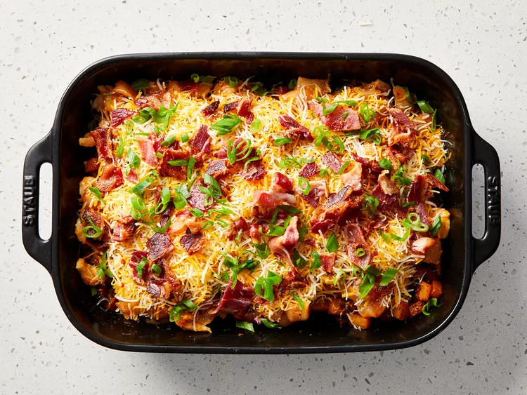

Gather all ingredients. all ingredients gathered to make buffalo chicken and roasted potato casserole. Preheat the oven to 500 degrees F (260 degrees C). Spray a 9x13-inch baking dish with cooking spray. Heat hot pepper sauce, olive oil, garlic powder, black pepper, paprika, and salt in a large skillet over low heat, stirring until thoroughly combined. Turn off heat. hot pepper sauce, olive oil, garlic powder, black pepper, paprika and salt heating in a skillet until thoroughly combined. Toss potatoes in batches with the hot pepper sauce mixture to coat and use a slotted spoon to transfer potatoes to the prepared baking dish. Leave remaining sauce in the skillet. potatoes added to skillet, tossing to coat and then transferred to prepared dish. Mix chicken into remaining sauce and allow to marinate while potatoes roast. chicken added to skillet, coating in remaining sauce. Bake potatoes until tender inside and crisp and brown outside, 45 to 50 minutes, stirring every 10 to 15 minutes. potatoes roasted until tender and crisp and browned outside. Reduce oven heat to 400 degrees F (205 degrees C). Spread chicken cubes over roasted potatoes. chicken cubes spread over roasted potatoes in prepared pan. Sprinkle shredded cheese, cooked bacon, and green onions over chicken. Return to the oven. cheese, bacon and green onions sprinkled over top the chicken. Bake in oven until chicken is cooked through and the cheese topping is bubbling, about 15 minutes.